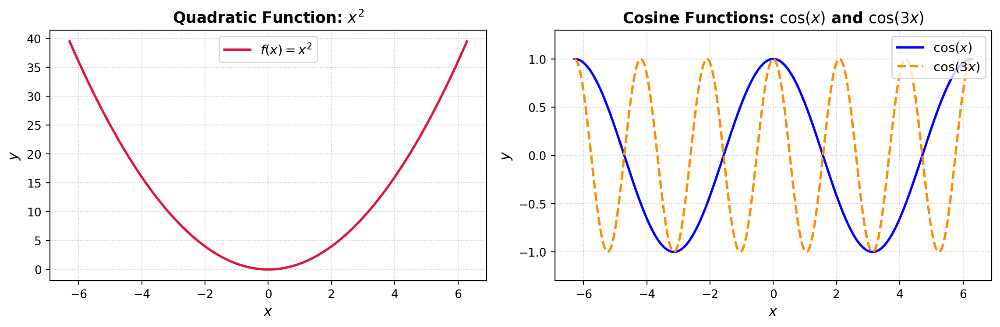
Lecture 6 — Heat Transfer Modelling
MATH3001(5005) — Applied Mathematical Modelling (Topics)
Prof. Benchawan Wiwatanapataphee
Curtin University
1 Sep 2026
Goals today:
- Introduction
- Partial Differential Equations (PDEs) and Fourier Methods
1.1 Definition and Classification of PDEs
1.2 Fourier Series
1.3 Separation of Variables - Mathematical Modelling of Heat Transfer
2.1 Basic Modes of Heat Transfer
2.2 The Fundamental Law of Conservation
2.3 Governing PDE for Heat Transfer
2.4 Boundary and Initial Conditions
2.5 Worked Examples
2.5.1 Steady-State Heat Transfer
2.5.2 Two-Dimensional Steady-State Conduction (Lecture 7)
2.5.3 Unsteady-State Heat Transfer (Lecture 7)
2.5.4 Numerical Methods and Applications (Lecture 7)
0. Introduction to Heat Transfer
The study of thermal energy transport caused by temperature differences. Thermal energy naturally flows from higher-temperature regions to lower-temperature regions until thermal equilibrium is achieved. Examples include:
Conduction through a solid wall
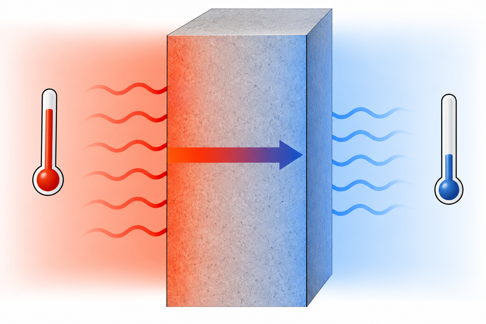
Heat exchange in a fluid flow
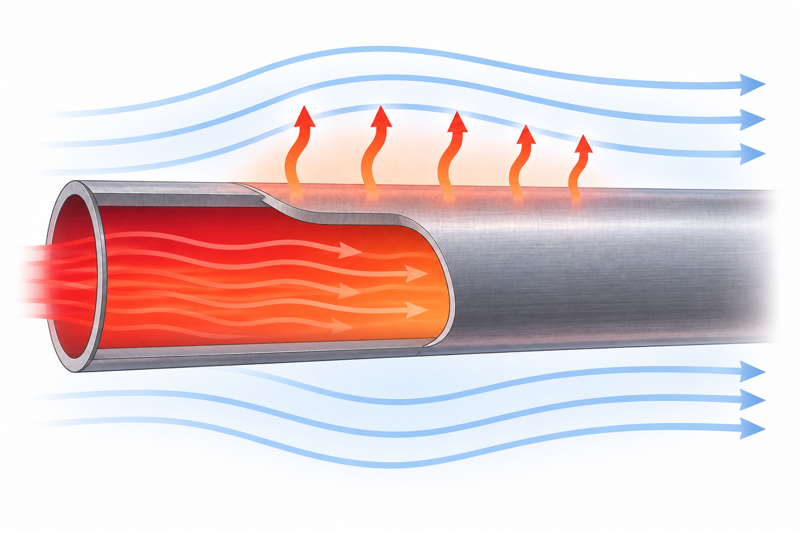
Temperature distribution in a rod
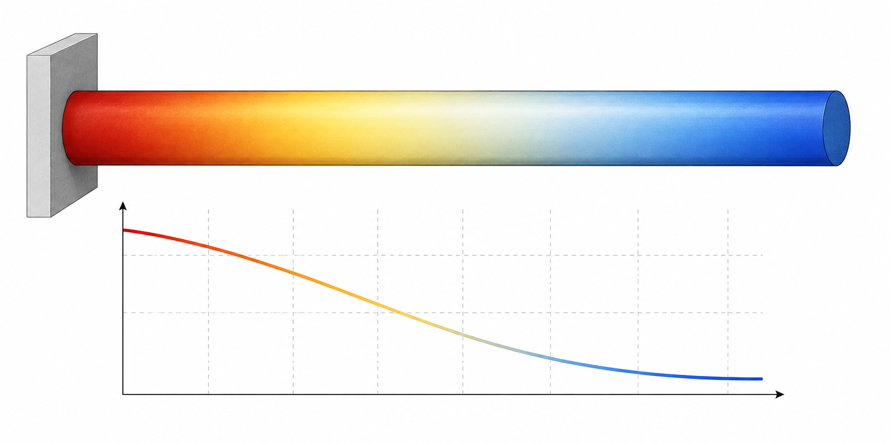
Cooling of electronic comp.
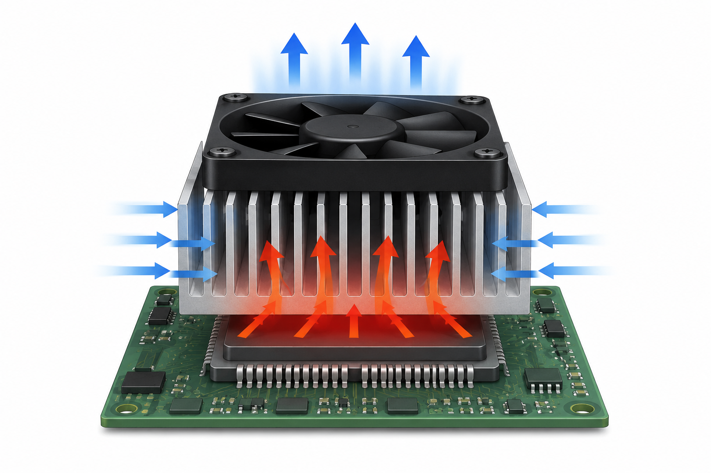
Analytical solutions of heat transfer problems often require the use of partial differential equations (PDEs) and techniques such as Fourier Series and the Method of Separation of Variables.
Example: Coffee Cup Handle Cooling
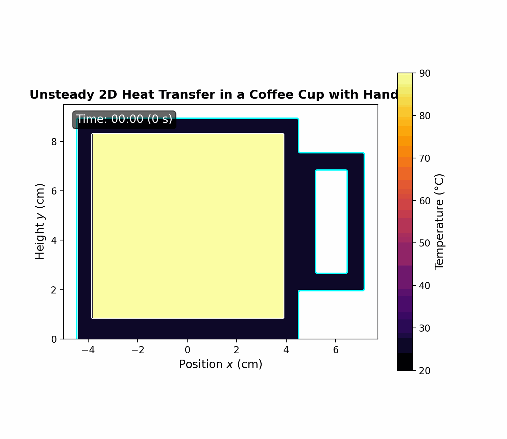
Example: Solar Heating of a Car
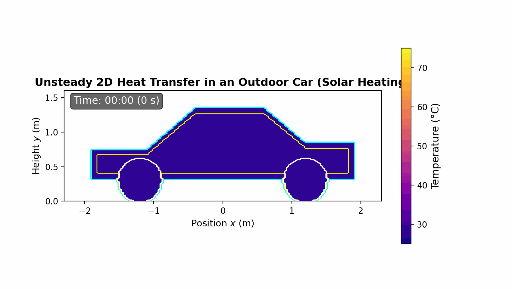
1. Partial Differential Equations (PDEs) and Fourier Methods
1.1 Definition and Classification of PDEs
A PDE contains partial derivatives of an unknown function with respect to two or more independent variables.
PDEs can be classified in several ways depending on their order, linearity, and whether the equation is homogeneous or nonhomogeneous.
I. First-Order and Higher-Order PDEs
The order of a PDE is determined by the highest-order partial derivative appearing in the equation.
- First-order PDE: contains only first-order partial derivatives as its highest derivatives, e.g.,
\[ \frac{\partial u}{\partial x}+\frac{\partial u}{\partial y}=0. \]
- Second-order PDE: Contains at least one second-order partial derivative and no derivatives of higher order, e.g.,
\[ \frac{\partial u}{\partial t} = \alpha\frac{\partial^2u}{\partial x^2} \]
- Higher-order PDE: A PDE is called higher-order when its highest derivative is of order three or greater, e.g.,
\[ \frac{\partial^4 u}{\partial x^4} + \frac{\partial^4 u}{\partial y^4}=0 \quad \text{fourth-order PDE} \]
In general, the order is determined solely by the highest derivative present, regardless of the order of the other derivatives.
II. Linear and Nonlinear PDEs
A PDE is linear if the dependent variable \(u\) and all of its derivatives appear only to the first power and are not multiplied together. The coefficients may depend on the independent variables.
- A general second-order linear PDE in two variables can be written as
\[ A(x,y)u_{xx} +B(x,y)u_{xy} +C(x,y)u_{yy} +D(x,y)u_x +E(x,y)u_y +F(x,y)u =G(x,y). \]
\[ u_{xx}+u_{yy}=0 \quad \text{Laplace's equation which is linear} \]
A PDE is nonlinear if \(u\) or its derivatives occur nonlinearly—for example, if they are squared, multiplied together, or appear inside nonlinear functions.
\[ u_t+uu_x=0, \;\; \text{(Burgers' equation)} \quad \text{nonlinear PDE} \]
\[ u_{xx}+(u_y)^2=0, \quad \text{nonlinear PDE} \]
III. Homogeneous and Nonhomogeneous PDEs
For linear PDEs, the terms homogeneous and nonhomogeneous refer to whether an external forcing or source term is present. \[ L[u]=f, \quad \text{(linear PDE)} \] where \(L\) is a linear differential operator.
Homogeneous PDE: The right-hand side is zero: \[ L[u]=0, \quad u_{xx}+u_{yy}=0. \]
Nonhomogeneous PDE: The right-hand side is nonzero: \[ L[u]=f(x,y), \qquad f(x,y)\neq0, \quad u_{xx}+u_{yy}=x^2+y^2. \]
The function \(x^2+y^2\) acts as a source or forcing term.
For homogeneous linear PDEs, the superposition principle applies,
- if \(u_1\) and \(u_2\) are solutions, then \(u=C_1u_1+C_2u_2\) is also a solution for arbitrary constants \(C_1\) and \(C_2\).
1.2 Fourier Series
Fourier series expresses a periodic function as an infinite sum of sine and cosine.
Periodic Functions
\(f(x)\) is periodic with period \(T\) if \[ f(x+T)=f(x) \; \forall x. \]
For example,
\(\sin x,\; \cos x,\; \sin 2x,\; \cos 3x\)
Orthogonal Functions
The trigonometric functions satisfy the orthogonality relations
\[ \int_{-\pi}^{\pi} \sin(mx)\sin(nx)\,dx = \begin{cases} 0,&m\neq n,\\ \pi,&m=n. \end{cases} \]
Similarly, \(\qquad\qquad \displaystyle\int_{-\pi}^{\pi}\cos(mx)\cos(nx)\,dx=\begin{cases}0,&m\neq n,\\\pi,&m=n.\end{cases}\)
and \(\qquad\qquad\qquad \displaystyle\int_{-\pi}^{\pi}\sin(mx)\cos(nx)\,dx=0.\)
These properties allow the Fourier coefficients to be computed independently.
Fourier Coefficients and the General Series
For a function defined on \((-\pi,\pi)\),
\[ f(x) = \frac{a_0}{2} + \sum_{n=1}^{\infty} \left( a_n\cos nx + b_n\sin nx \right), \] where
\[ a_0 = \frac{1}{\pi} \int_{-\pi}^{\pi} f(x)\,dx, \]
\[ a_n = \frac{1}{\pi} \int_{-\pi}^{\pi} f(x)\cos(nx)\,dx, \] and
\[ b_n = \frac{1}{\pi} \int_{-\pi}^{\pi} f(x)\sin(nx)\,dx. \]
Even Functions
- An even function satisfies \(f(-x)=f(x)\),
- the Fourier series contains only cosine terms, \(b_n=0\) and \(a_n\) can be computed.
Odd Functions
- An odd function satisfies \(f(-x)=-f(x)\),
- the Fourier series contains only sine terms, \(a_n=0\) and \(b_n\) can be computed.
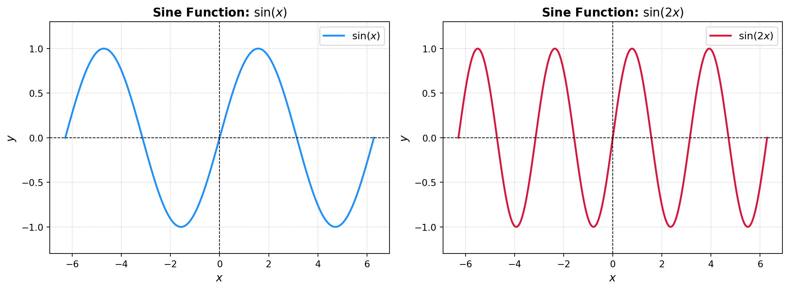
Half-Range Expansions
- The sine and cosine series on \((0,L)\) are also called half-range Fourier expansions because the original function is specified over only one-half of the interval \((-L,L)\).
The half-range sine expansion is \[ f(x) \sim \sum_{n=1}^{\infty} \left[ \frac{2}{L} \int_0^L f(\xi) \sin\left(\frac{n\pi \xi}{L}\right)\,d\xi \right] \sin\left(\frac{n\pi x}{L}\right). \]
The half-range cosine expansion is \[ f(x) \sim \frac{1}{L}\int_0^L f(\xi)\,d\xi + \sum_{n=1}^{\infty} \left[ \frac{2}{L} \int_0^L f(\xi) \cos\left(\frac{n\pi \xi}{L}\right)\,d\xi \right] \cos\left(\frac{n\pi x}{L}\right). \]
- The integration variable \(\xi\) is used inside the coefficients to distinguish it from the independent variable \(x\) in the resulting series.
Example 1: Fourier Sine Series of \(f(x)=x\)
Consider \[ f(x)=x, \qquad 0<x<L. \]
Its Fourier sine coefficients are \[ b_n = \frac{2}{L} \int_0^L x\sin\left(\frac{n\pi x}{L}\right)\,dx. \]
Integration by parts gives \[ b_n = \frac{2L}{n\pi}(-1)^{n+1}. \]
Therefore, \[ x \approx \frac{2L}{\pi} \sum_{n=1}^{\infty} \frac{(-1)^{n+1}}{n} \sin\left(\frac{n\pi x}{L}\right), \qquad 0<x<L. \]
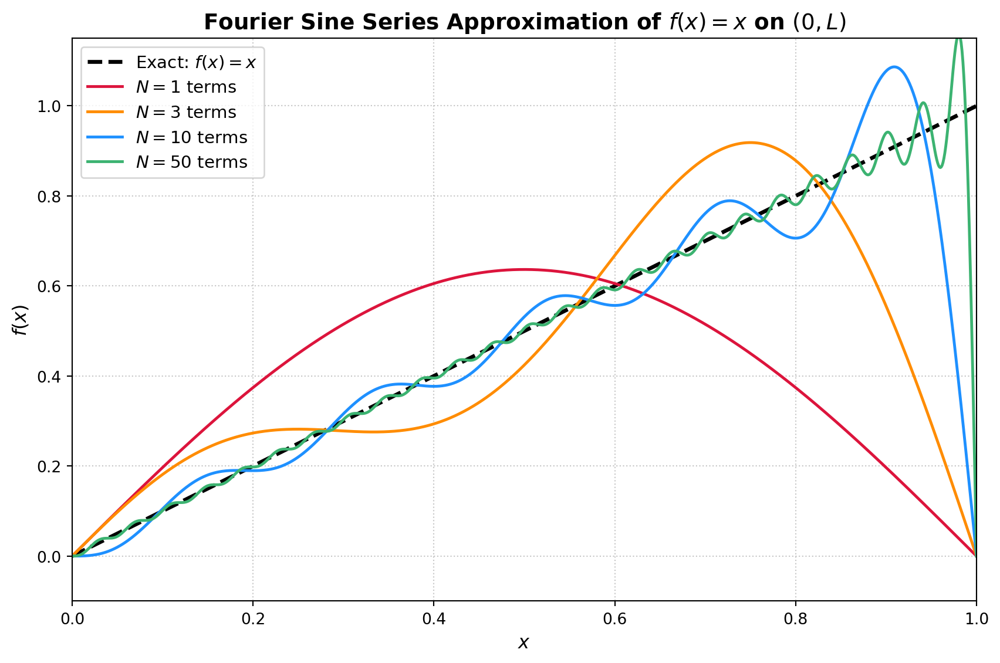
Example 2: Fourier Cosine Series of \(f(x)=x\)
For the same function \(\; f(x)=x,\;0<x<L,\) the cosine coefficients are
\[ a_0 = \frac{2}{L}\int_0^L x\,dx =L, \]
\[ a_n = \frac{2}{L} \int_0^L x\cos\left(\frac{n\pi x}{L}\right)\,dx. \]
After integration,
\[ a_n = \frac{2L}{n^2\pi^2} \left[(-1)^n-1\right] = \begin{cases} 0, & n \text{ even},\\[4pt] -\dfrac{4L}{n^2\pi^2}, & n \text{ odd}. \end{cases} \]
The Fourier cosine series is therefore \[ x \approx \frac{L}{2} - \frac{4L}{\pi^2} \sum_{\substack{n=1\\n\text{ odd}}}^{\infty} \frac{1}{n^2} \cos\left(\frac{n\pi x}{L}\right), \qquad 0<x<L. \]
Equivalently,
\[ x \approx \frac{L}{2} - \frac{4L}{\pi^2} \sum_{m=0}^{\infty} \frac{1}{(2m+1)^2} \cos\left(\frac{(2m+1)\pi x}{L}\right). \]
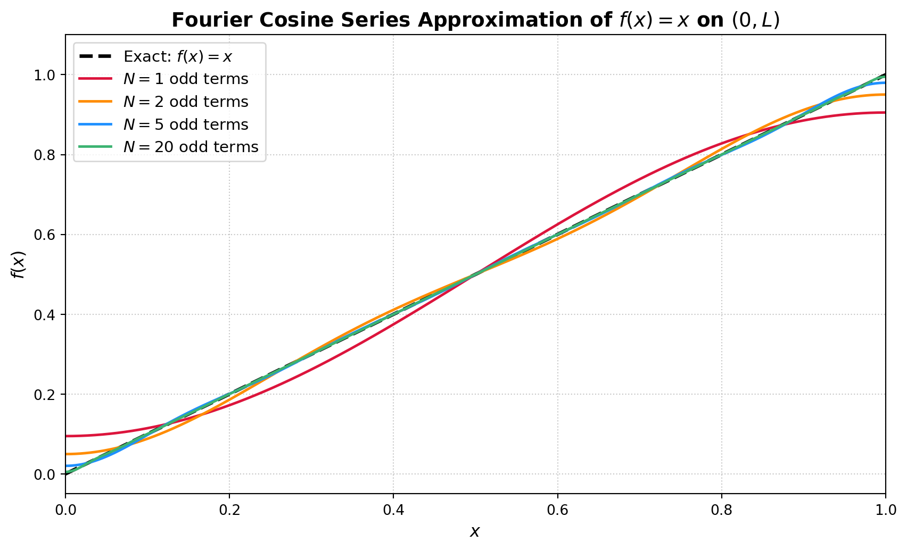
Convergence of Fourier Series
If \(f(x)\) and its derivative are piecewise continuous, its Fourier series converges at an interior point \(x\) to \(\dfrac{f(x^-)+f(x^+)}{2}.\)
At a point where \(f\) is continuous, \(\dfrac{f(x^-)+f(x^+)}{2}=f(x),\) so the Fourier series converges to the function itself.
At a jump discontinuity, the series converges to the average of the left-hand and right-hand limits.
Oscillations may occur near a discontinuity; this behavior is known as the Gibbs phenomenon.
For a half-range sine series, the endpoint values are determined by the odd periodic extension.
For a half-range cosine series, the endpoint behavior is determined by the even periodic extension.
Parseval’s Identity
For the Fourier sine series \[ f(x) \approx \sum_{n=1}^{\infty} b_n\sin\left(\frac{n\pi x}{L}\right), \] Parseval’s identity is \[ \int_0^L |f(x)|^2\,dx = \frac{L}{2} \sum_{n=1}^{\infty}b_n^2. \]
For the Fourier cosine series \[ f(x) \approx \frac{a_0}{2} + \sum_{n=1}^{\infty} a_n\cos\left(\frac{n\pi x}{L}\right), \] Parseval’s identity becomes \[ \int_0^L |f(x)|^2\,dx = \frac{L}{4}a_0^2 \frac{L}{2} \sum_{n=1}^{\infty}a_n^2. \]
1.3 General Separation-of-Variables Procedure
Expressing the unknown function as a product of functions, each depending on only one independent variable, e.g., a function \(u=u(x,y),\) assume a separated solution of the form \[ u(x,y)=X(x)Y(y), \tag{1}\]
The general procedure includes 8 steps:
Step 1: Write the PDE and Boundary Conditions
Consider a second-order linear PDE defined in a rectangular domain \[ 0<x<L, \qquad 0<y<H. \]
A classical example \(\qquad\qquad \dfrac{\partial^2 u}{\partial x^2}+\dfrac{\partial^2 u}{\partial y^2}=0.\)
\[ u(0,y)=0, \qquad u(L,y)=0, \quad u(x,0)=0, \qquad u(x,H)=f(x). \]
Step 2: Assume a Product Solution
Assume \(\hspace{8em} u(x,y)=X(x)Y(y).\)
Then \(\hspace{9em} \dfrac{\partial^2 u}{\partial x^2}=X''(x)Y(y),\)
and \(\hspace{9.5em} \dfrac{\partial^2 u}{\partial y^2}=X(x)Y''(y).\)
\[ X''(x)Y(y)+X(x)Y''(y)=0. \]
Step 3: Separate the Variables
Divide by \(X(x)Y(y)\), assuming that neither function is identically zero: \[ \frac{X''(x)}{X(x)} + \frac{Y''(y)}{Y(y)} =0. \quad \Rightarrow \quad \frac{X''(x)}{X(x)}=-\frac{Y''(y)}{Y(y)}. \]
Let \(\lambda\) be the separation constant. Write \(\;\dfrac{X''}{X}=-\lambda,\quad\dfrac{Y''}{Y}=\lambda.\)
This gives the two ODEs: \(\qquad X''+\lambda X=0\quad\) and \(\quad Y''-\lambda Y=0.\)
Step 4: Consider the Possible Signs of the Separation Constant (\(\lambda\))
Case 1: \(\lambda=\mu^2>0\)
The equations become \(\quad X''+\mu^2X=0 \quad \text{and} \quad Y''-\mu^2Y=0.\)
General solutions are \(\quad X(x)=A\cos(\mu x)+B\sin(\mu x)\)
and \(\hspace{8.2em} Y(y)=C\cosh(\mu y)+D\sinh(\mu y).\)
Equivalently, \(\hspace{4.6em} Y(y)=C_1e^{\mu y}+C_2e^{-\mu y}.\)
Case 2: \(\lambda=0\)
The equations become \[ X''=0, \quad Y''=0. \]
Thus, their general solutions are \[ \begin{aligned} X(x)&=A+Bx, \\ Y(y)&=C+Dy. \end{aligned} \]
Case 3: \(\lambda=-\mu^2<0\)
The equations become \[ X''-\mu^2X=0, \quad Y''+\mu^2Y=0. \]
Their general solutions are \[ \begin{aligned} X(x)&=Ae^{\mu x}+Be^{-\mu x}, \\ Y(y)&=C\cos(\mu y)+D\sin(\mu y). \end{aligned} \]
Step 5: Apply the Homogeneous Boundary Conditions
Using \(u(0,y)=0, \; u(L,y)=0,\) and (1), we obtain \(\; X(0)=0,\; X(L)=0.\)
For the positive separation constant case, \(X(x)=A\cos(\mu x)+B\sin(\mu x).\)
From \(X(0)=0\), \(\Rightarrow \quad A=0 \quad \text{and} \quad X(x)=B\sin(\mu x).\)
From \(X(L)=0\), \(\Rightarrow \quad B\sin(\mu L)=0, \quad B\neq 0, \quad \sin(\mu L)=0.\)
So \(\mu L = n\pi, \quad \Rightarrow \quad \mu_n=\dfrac{n\pi}{L}, \quad n=1,2,3,\ldots.\)
The corresponding eigenfunctions are \(\quad X_n(x)= B_n\sin\left(\dfrac{n\pi x}{L}\right).\)
Step 6: Solve the Remaining ODE
For each eigenvalue \(\mu_n=\dfrac{n\pi}{L},\) the equation for \(Y\) is \[ Y_n''-\mu_n^2Y_n=0. \]
Thus, \[ Y_n(y) = C_n\cosh\left(\frac{n\pi y}{L}\right) + D_n\sinh\left(\frac{n\pi y}{L}\right). \]
BC is \(u(x,0)=0,\) then \(Y_n(0)=0.\)
Since \(Y_n(0)=C_n,\) we obtain \(C_n=0.\)
Therefore, \[ Y_n(y) = D_n\sinh\left(\frac{n\pi y}{L}\right). \]
A separated solution is then \[ u_n(x,y) = D_n \sin\left(\frac{n\pi x}{L}\right) \sinh\left(\frac{n\pi y}{L}\right). \]
Step 7: Form a Superposition of Separated Solutions
\[ u(x,y) = \sum_{n=1}^{\infty} D_n \sin\left(\frac{n\pi x}{L}\right) \sinh\left(\frac{n\pi y}{L}\right) \]
satisfies the three homogeneous BCs \(u(0,y)=0, u(L,y)=0, u(x,0)=0.\)
Step 8: Apply the Nonhomogeneous Boundary Condition
Apply \(u(x,H)=f(x)\). Then \(f(x)=\displaystyle\sum_{n=1}^{\infty}D_n\sinh\left(\dfrac{n\pi H}{L}\right)\sin\left(\dfrac{n\pi x}{L}\right).\)
This is a Fourier sine series for \(f(x)\). Its coefficients satisfy \[ \begin{aligned} D_n \sinh\left(\frac{n\pi H}{L}\right) &= \frac{2}{L} \int_0^L f(x) \sin\left(\frac{n\pi x}{L}\right)\,dx \\ \Rightarrow D_n &= \frac{2} {L\sinh\left(\frac{n\pi H}{L}\right)} \int_0^L f(\xi) \sin\left(\frac{n\pi \xi}{L}\right)\,d\xi. \end{aligned} \]
The variable \(\xi\) is used as the integration variable to distinguish it from the independent variable \(x\).
The solution is
\[ u(x,y) = \sum_{n=1}^{\infty} D_n \sin\left(\frac{n\pi x}{L}\right) \sinh\left(\frac{n\pi y}{L}\right). \]
Remark: The type of homogeneous BCs determines the eigenfunctions.
| Boundary Conditions | Typical Eigenfunctions |
|---|---|
| \(X(0)=0,\; X(L)=0\) | \(\displaystyle \sin\!\left(\frac{n\pi x}{L}\right)\) |
| \(X'(0)=0,\; X'(L)=0\) | \(\displaystyle \cos\!\left(\frac{n\pi x}{L}\right)\) |
| \(X(0)=0,\; X'(L)=0\) | \(\displaystyle \sin\!\left(\frac{(n+\frac12)\pi x}{L}\right)\) |
| \(X'(0)=0,\; X(L)=0\) | \(\displaystyle \cos\!\left(\frac{(n+\frac12)\pi x}{L}\right)\) |
Thus, the BCs determine the appropriate Fourier expansion and the allowable eigenvalues.
2. Mathematical Modeling of Heat Transfer
Mathematical modeling provides a systematic framework for describing, analysing, and predicting temperature distributions and heat-transfer rates in engineering systems.
Common units of heat transfer include the joule (J), calorie (cal), and kilocalorie (kcal), while heat-transfer rate is commonly expressed in kilowatts (kW).
A complete mathematical model of heat transfer generally begins by identifying the relevant modes of heat transfer and applying the principle of conservation of energy.
These considerations are used to formulate an appropriate governing differential equation that describes how temperature varies with position and time.
The model must also include suitable initial and boundary conditions that represent the physical conditions of the system.
2.1 Basic Modes of Heat Transfer
Three basic mechanisms: conduction, convection, and radiation.
Conduction
Associated with interactions and collisions between atoms and molecules.
Particles in a region of higher temperature possess greater kinetic energy and therefore move or vibrate more rapidly.
When these energetic particles interact with slower particles in a colder region, energy is transferred from the faster particles to the slower ones.
As a result, thermal energy is transported from regions of higher temperature to regions of lower temperature.
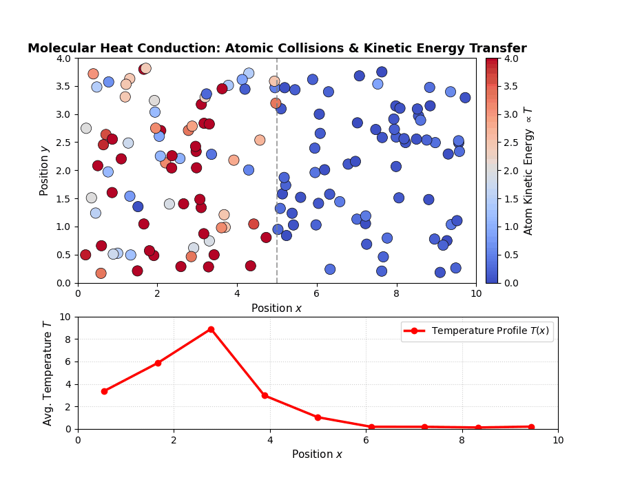
Heat Flux
Heat flux (\(q\)) is the rate of heat energy transferred through a given surface per unit area per unit time.
While heat flow rate (\(Q\), measured in Watts or J/s) measures the total energy moving through a system, heat flux measures how concentrated or dense that heat transfer is at a specific point on a surface.
Heat flux is inherently a vector quantity:
\[ q = q_x \hat{i} + q_y \hat{j} + q_z \hat{k} \]
Direction: Heat flux always points in the direction of decreasing temperature (from hot to cold), orthogonal to isothermal surfaces (surfaces of equal temperature).
Magnitude: \(|q|=\dfrac{dQ}{dA \cdot dt}\), representing Watts per square meter (\(\mathrm{W/m^2}\))
Mathematical Relation to Total Heat Transfer Rate (\(Q\))
- To find the total heat transfer rate \(Q\) (Watts) throug an arbitrary surface \(A\):
\[ Q = \int\int_A \mathbf{q} \cdot \mathrm{n} \, d\mathbf{A} \]
- \(\mathrm{n}\) is the unit normal vector to the surface element \(d\mathbf{A}\) on the surface \(A\).
Thermal Conductivity
Thermal conductivity (\(k\)) is an intrinsic physical property of a material that measures its ability to conduct heat.
It represents the quantity of heat that passes per unit time through a unit thickness of a material in a direction normal to a surface of unit area, per unit temperature difference. SI units: \(\mathrm{W/(m,^{\circ}C)}\) or equivalently \(\mathrm{W/(m,K)}\).
Note: A temperature difference of \(\mathrm{1K}\) is identical to a temperature difference of \(\mathrm{1^{\circ}C} (\triangle T_K=\triangle T_{^{\circ}C})\), so both units are interchangable.
Microscopic Mechanism Across Material States
The microscopic mechanism of heat conduction varies across different material states:
Solids (Metal): Conduction occurs primarily via free electron motion and lattice vibrations (phonons). Metals have high thermal conductivity (\(k \sim 100 - 400 \, \mathrm{W/(m,K)}\)) due to abundant free electrons.
Non-Metallic Solids & Insulators: Heat is conducted almost entirely via lattice vibrations (phonons). Materials like wood, glass, or ceramic have lower values of thermal conductivity (\(k \sim 0.1 - 2\, \mathrm{W/(m,K)}\)).
Fluids (Liquids & Gases): Conduction happens via direct molecular collisions and momentum transfer. Gases have low conductivity (\(k \sim 0.01 - 0.1\, \mathrm{W/(m,K)}\)), while liquids have moderate conductivity (\(k \sim 0.1 - 1\, \mathrm{W/(m,K)}\)).
| Material Class | Material State | Thermal Conductivity [\(\mathrm{W/(m\,K)}\)] |
|---|---|---|
| High Conductors | Diamond | \(\sim 100o - 2200\) |
| Copper | \(\sim 401\) | |
| Silver | \(\sim 429\) | |
| Gold | \(\sim 318\) | |
| Aluminum | \(\sim 237\) | |
| Building Materials | Non-Metallic Solids & Insulators | \(\sim 0.1 - 2\) |
| Wood | \(\sim 0.1 - 0.2\) | |
| Glass | \(\sim 0.8 - 1.0\) | |
| Concrete | \(\sim 0.8 - 1.8\) | |
| Insulators | Fiberglass Insulation | \(\sim 0.04\) |
Fourier’s Law of Heat Conduction
- Fourier’s law describes the relationship between heat transfer and the temperature gradient \(\nabla T\).
- The amount of heat transferred per unit time through a surface of area \(A_s\) is given by
\[ \mathbf{Q}=-kA_s\nabla T, \]
- The negative sign indicates that heat flows in the direction of decreasing temperature, from a hotter region toward a colder region.
In terms of heat flux, Fourier’s law is
\[ \mathbf{q}=-k\nabla T. \]
Thus, Fourier’s law states that the heat-transfer rate through a material is proportional to the temperature gradient and the cross-sectional area perpendicular to the direction of heat flow.
For one-dimensional heat conduction in the \(x\)-direction, the heat flux is
\[ q_x=-k\frac{dT}{dx}. \]
If the total heat-transfer rate through an area \(A_s\) is required, then
\[ Q_x=-kA_s\frac{dT}{dx}. \]
Again, the negative sign indicates that heat flows from a region of higher temperature to a region of lower temperature.
Convection
- Heat transfer through the bulk motion of a fluid (liquid/gas).
- Combines conduction near the wall with fluid advection.
Convective Heat Flux
\[\mathbf{q}_c = \varepsilon \mathbf{v}\] where \(\varepsilon\) is thermal energy density and \(\mathbf{v}\) is fluid velocity.
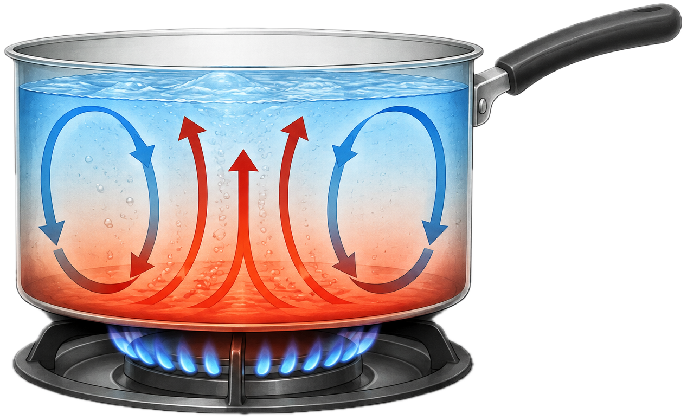
Newton’s Law of Cooling
Describes heat exchange between a solid surface and an adjacent fluid: \[Q = h A_s (T_s - T_\infty)\]
- \(h\): Convective heat transfer coefficient (\(\mathrm{W/(m^2\cdot K)}\))
- \(A_s\): Surface area
- \(T_s, T_\infty\): Surface and bulk fluid temperatures
Natural vs. Forced Convection
- Natural Convection: Driven by buoyancy / density changes (e.g., boiling water, land/sea breezes).
- Forced Convection: Driven by external flow (e.g., fans, pumps, blood circulation, car radiators).
Practical Examples
| Application | Type | Mechanism & Details |
|---|---|---|
| Passive CPU Heatsink | Natural | Air adjacent to hot aluminum fins warms up, decreases in density, and rises naturally due to buoyancy forces. |
| Fan-Cooled CPU / GPU | Forced | A high-speed fan mechanically forces ambient air across heatsink fins (\(V > 3\ \mathrm{m/s}\)), increasing \(h\) significantly. |
| Hot Cup of Coffee | Natural/ Mixed | Hot steam and warm air rise vertically from the open top surface via natural convection; ambient breezes add forced components. |
| Car Radiator | Forced | A water pump circulates hot coolant inside while car motion and an electric fan force outdoor air through the radiator fins. |
Practical Examples (continued)
| Application | Type | Mechanism & Details |
|---|---|---|
| Sea Breeze (Coastal Weather) | Natural | Solar heating warms land faster than the sea. Rising warm land air draws cooler, denser sea air inland via large-scale buoyancy currents. |
| Human Body Thermoregulation | Forced (Internal) | The heart acts as a pump, forcing blood flow through vessels to transport core body heat to the skin surface. |
| Convection Oven | Forced | Internal fans circulate hot air evenly around food, reducing boundary layer resistance and accelerating cooking times. |
| Boiling Water | Natural | Heat from the stove warms the water at the bottom of the pot, causing it to rise as it becomes less dense, while cooler water descends, creating convection currents. |
Radiation
Radiation is the transfer of thermal energy through electromagnetic waves. Unlike conduction and convection, radiation does not require a material medium and can therefore occur through a vacuum. For example, thermal energy from the Sun reaches the Earth primarily through radiation.
Stefan–Boltzmann Law of Thermal Radiation.
- The thermal radiation, \(\dot{Q}_{\mathrm{rad}}\), emitted by an ideal blackbody is described by the Stefan–Boltzmann law:
\[ \dot{Q}_{\mathrm{rad}} = \sigma A_sT_s^4, \]
- \(\sigma\) is the Stefan–Boltzmann constant,
- \(A_s\) is the radiating surface area, and
- \(T_s\) is the absolute surface temperature, measured in kelvin (K).
The Stefan–Boltzmann constant is
\[ \sigma = 5.67\times10^{-8}; \mathrm{W/(m^2,K^4)}. \]
For a real surface exchanging radiation with large surroundings, the net radiative heat-transfer rate is
\[ \dot{Q}_{\mathrm{rad}} = \varepsilon\sigma A_s \left( T_s^4-T_{\mathrm{sur}}^4 \right), \]
\(\varepsilon\) is the surface emissivity, with \(0\leq\varepsilon\leq1\), and
\(T_{\mathrm{sur}}\) is the absolute temperature of the surroundings.
- If \(T_s>T_{\mathrm{sur}}\), the surface experiences a net loss of thermal energy by radiation.
- If \(T_s<T_{\mathrm{sur}}\), the surface experiences a net gain of thermal energy from its surroundings.
2.2 The Fundamental Law of Conservation
The mathematical formulation of a heat-transfer problem is based on the conservation of energy.
This principle states that energy cannot be created or destroyed; it can only be transferred, converted from one form to another, or stored within a system.
For a general control volume, the energy balance can be expressed as
\[ \text{Energy entering} - \text{Energy leaving} + \text{Energy generated} = \text{Energy accumulated}. \]
- In rate form, the conservation equation becomes
\[ \dot{E}_{\mathrm{in}} - \dot{E}_{\mathrm{out}} + \dot{E}_{\mathrm{gen}} = \frac{dE_{\mathrm{stored}}}{dt}, \]
For a stationary solid with constant density \(\rho\) and specific heat capacity \(c_p\), the rate of thermal-energy accumulation per unit volume is
\[ \rho c_p\frac{\partial T}{\partial t}, \]
where \(T\) is the temperature and \(t\) is time.
The conservation of energy principle, when combined with Fourier’s law of heat conduction, provides the basis for deriving the governing heat-conduction equation.
This equation describes how the temperature within a material varies with position and time as a result of heat conduction, internal heat generation, and thermal-energy storage.
2.3 Governing PDE for Heat Transfer
For a homogeneous, isotropic solid, the general 3-D heat equation is
\[ \rho c_p\frac{\partial T}{\partial t} = \nabla\cdot\left(k\nabla T\right) + \dot{q}_v, \]
where \(\rho\) is the density of the material, \(c_p\) is the specific heat capacity, \(T\) is the temperature, \(k\) is the thermal conductivity, and \(\dot{q}_v\) is the volumetric heat-generation rate.
- When the thermal conductivity \(k\) is constant, the equation simplifies to
\[ \rho c_p\frac{\partial T}{\partial t} = k\nabla^2T+\dot{q}_v. \]
Introducing the thermal diffusivity \(\alpha=\dfrac{k}{\rho c_p},\) the heat equation can be written as
\[ \frac{\partial T}{\partial t} = \alpha\nabla^2T + \frac{\dot{q}_v}{\rho c_p}. \]
- For steady-state heat transfer, the temperature at each point does not change with time, i.e., \(\dfrac{\partial T}{\partial t}=0,\) and the governing equation reduces to
\[ \nabla^2T+\frac{\dot{q}_v}{k}=0, \] which is known as Poisson’s equation for steady-state heat conduction with internal heat generation.
- If there is no internal heat generation, so that \(\dot{q}_v=0\), the equation further reduces to Laplace’s equation: \(\nabla^2T=0\)
2.4 Boundary and Initial Conditions
Common thermal boundary conditions include the following.
Temperature specified at the boundary.
Heat flux specified at the boundary.
Convective heat transfer at the boundary.
Radiative heat transfer at the boundary.
Additionally,
The temperature distribution at the initial time must be specified.
BC1: Specified Temperature or Dirichlet Condition
The temperature at the boundary is prescribed:
\[ T=T_s, \]
where \(T_s\) is the specified surface temperature.
BC2: Specified Heat Flux or Neumann Condition
The heat flux normal to the boundary is prescribed:
\[ -k\frac{\partial T}{\partial n}=q_s'', \]
where \(q_s''\) is the specified surface heat flux and \(\partial T/\partial n\) represents the temperature gradient in the direction normal to the surface.
An insulated or adiabatic boundary is an important special case in which no heat crosses the boundary. Therefore,
\[ q_s''=0 \quad \Longrightarrow \quad \frac{\partial T}{\partial n}=0. \]
BC3: Convective or Robin Condition
When a solid surface exchanges heat with a surrounding fluid by convection, BC:
\[ -k\frac{\partial T}{\partial n} = h\left(T_s-T_\infty\right), \]
where \(h\) is the convective heat-transfer coefficient, \(T_s\) is the surface temperature, and \(T_\infty\) is the temperature of the surrounding fluid.
BC4: Radiative Boundary Condition
When heat is exchanged between a surface and its surroundings by thermal radiation, BC is \[ -k\frac{\partial T}{\partial n} =\varepsilon\sigma \left(T_s^4-T_{\mathrm{sur}}^4\right), \]
- \(\varepsilon\): surface emissivity,
- \(\sigma\): Stefan–Boltzmann constant,
- \(T_s\): absolute surface temperature,
- \(T_{\mathrm{sur}}\): absolute surrounding temperature.
- Because temperature appears to the fourth power, the BC is nonlinear.
IC1: Initial Condition
For a transient heat-transfer problem, the temperature distribution must also be specified at an initial time, usually \(t=0\).
- The initial condition is written as
\[ T(\mathbf{x},0)=T_i(\mathbf{x}), \]
where \(T_i(\mathbf{x})\) represents the initial temperature distribution throughout the solution domain.
Thus, a complete transient heat-transfer problem generally consists of the governing heat equation, appropriate boundary conditions, and an initial condition.
Heat-transfer problems are commonly classified as steady-state or unsteady-state (transient) problems, depending on whether the temperature varies with time.
2.5 Worked Examples
2.5.1 Steady-State Heat Transfer
The temperature at every point in a system remains constant with time.
The temperature may still vary from one position to another, but at any fixed location there is no temporal change.
\[ \therefore \quad\frac{\partial T}{\partial t}=0. \]
- Under steady-state conditions,
- there is no accumulation of thermal energy within the material.
- The rate of heat entering a region must therefore balance the rate of heat leaving it, provided there is no internal heat generation.
Example 3: One-Dimensional Conduction Through a Plane Wall
Consider a plane wall of thickness \(L\) and cross-sectional area \(A\).
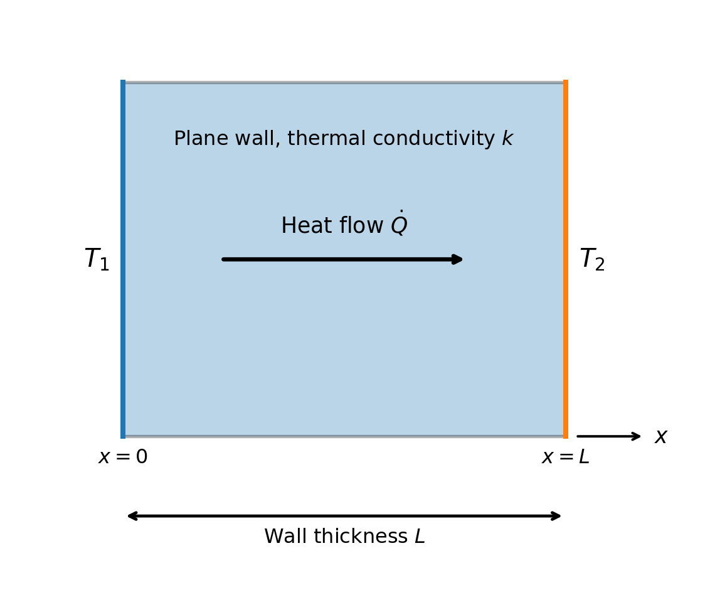
Assume that the process of heat conduction through the wall is 1-D and occurs in the \(x\)-direction and that the other assumptions listed below hold.
- The process is at steady state,
- The thermal conductivity \(k\) is constant,
- There is no internal heat generation, and
- The wall surfaces are maintained at constant temperatures.
Under these assumptions, the general heat-conduction equation reduces to
\[ \frac{d^2T}{dx^2}=0 \quad \Rightarrow\quad \int_0^L \frac{d^2T}{dx^2}dx = \int_0^L 0 \, dx . \]
\[ \frac{dT}{dx}=C_1, \quad \Rightarrow\quad T(x)= C_1 x + C_2, \]
where \(C_1\) and \(C_2\) are constants determined from the boundary conditions.
Suppose the wall occupies the region \(0\leq x\leq L,\) with prescribed surface temperatures \(T(0)=T_1,\quad T(L)=T_2.\)
Applying the first boundary condition,
\[ T(0)=C_2=T_1, \quad \Rightarrow\quad C_2=T_1. \]
- Applying the second boundary condition,
\[ T_2=C_1L+T_1, \quad\Rightarrow \quad C_1=\frac{T_2-T_1}{L}. \]
- Therefore, the temperature distribution within the wall is
\[ T(x)=T_1+\frac{T_2-T_1}{L}x. \]
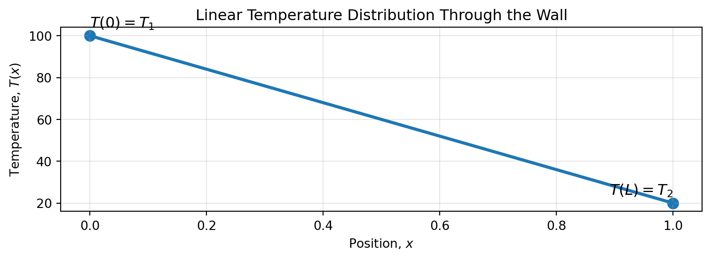
Example 4: Heat-Transfer Rate
- Fourier’s law for one-dimensional heat conduction is \(\dot{Q}=-kA\dfrac{dT}{dx}.\)
Since \[ \frac{dT}{dx}=\frac{T_2-T_1}{L}, \quad \text{the heat-transfer rate becomes} \]
\[ \boxed{ \dot{Q} = \frac{kA}{L}(T_1-T_2) }. \]
- If \(T_1>T_2\), heat flows from the surface at \(x=0\) toward the surface at \(x=L\), consistent with the principle that heat flows from higher to lower temperature.
The corresponding heat flux is
\[ q''=\frac{\dot{Q}}{A} = \frac{k}{L}(T_1-T_2) . \]
- The plane-wall result can also be written using the concept of thermal resistance:
\[ R_{\mathrm{cond}}=\frac{L}{kA}. \]
Hence,
\[ \dot{Q} = \frac{T_1-T_2}{R_{\mathrm{cond}}} . \]
- This thermal-resistance form is particularly useful when analysing systems containing several material layers or multiple heat-transfer mechanisms.